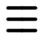

Make a shielded transfer in the Mobile Wallet¶
This topic describes how to make a shielded CCD transaction from an account in the Mobile Wallet. If you are looking for a guide on how to make a regular CCD transfer, you can find the guide here.
Note
A shielded transfer is a transfer between two accounts, where the amount of the transfer is encrypted. The sender, receiver, and potential memo will be publicly visible on the blockchain.
Warning
Do not shield or transfer all of your funds or you will not have enough funds to cover transaction fees for unshielding or sending them.
Make a shielded CCD transfer from an account¶
Go to the Accounts page.
Tap the Account you want to transfer CCD from or tap
 for the account.
for the account.If the shielded balance is hidden for the account, go to the  menu in the upper right corner and tap Show shielded balance for _your account name_.
Tap the Shielded balance tab of the totals area.
Tap SEND.

Enter the amount you want to transfer.
In Paste recipient address, enter the recipient address for the recipient of the transfer.
You can also choose a recipient that already exists in your Address Book, or add a new one by tapping Scan QR.
Tap Send Amount.

Optional: You can add a memo to your transaction. A memo is a short message that will be shown with the transaction. Memos are publicly visible on the chain, so be careful what you write. Adding a memo will also add to the fee of the transaction.
Finally, tap Send shielded amount.

The transaction is subbmitted; tap Ok, thanks.

Your transaction is now submitted to the chain. It might take a little while for it to finalize on the chain, and you can follow the status of the transaction in the log.
Note
All transfers and transactions cost a fee, including shielding and unshielding transactions. The fee is based on the set NRG for that transaction and the current exchange rate. The cost of transaction fees is stable in Euros, and therefore the price in CCD varies depending on the CCD to EUR exchange rate. The fee will always be deducted from the Balance of the account, so it is important to have some available CCDs to cover fees. You can see the fee in the transaction log.
Support & Feedback¶
If you have questions or feedback, join us on Discourse, or contact us at support@concordium.software.